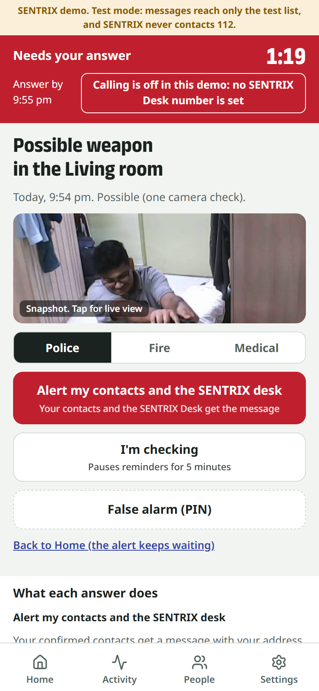

01
The problem
94–98%
of burglar-alarm activations are false alarms [1].
SENTRIX confirms on the device (Fig. 1), then asks the owner.
02
Goals → outcomes
- Multimodal AI on the device
- One threat index, five levels
- Encrypted, signed evidence
- Pi 5 unit in a printed case
- Portal and Desk live on Render
- Next: Pi decisions, ~4 s → 2 s
- Next: train on room footage
What we learned
- Rules beat any single model.
- Every room needs calibrating.
- Measure alarms, not frames.
03
How it works
- SenseCamera Module 3 and USB microphone on a Pi 5 (Fig. 2)
- RecogniseYOLO11n [2] · DINOv2 [3] · faces [4] · OSNet [5] · PANNs [6]
- Confirm2 of 3 checks agree with a person in view; Level 4+ needs two kinds of evidence
- ScoreThreat index 0–1 → five levels
1 Log2 Notice3 Ask owner4 Dispatch pack5 Critical
- AskThe owner decides first (Fig. 3); contacts and the SENTRIX Desk only if needed
Fig. 1 From camera to SOS
04
The unit as built


- 1Camera Module 3, tilting mount
- 2Status LEDs: green, amber, red
- 3Raspberry Pi 5 (8 GB), Active Cooler, 128 GB microSD
- 4USB microphone, any port
- 53D-printed case, rev F
- 6Official 27 W USB-C supply
Fig. 2 The unit (render of the printed case) · Fig. 3 Owner's alert
05
Results
Public models13.96
Fine-tuned7.12
Our own footage0.79
+ evidence rules0.00
Fig. 4 False alarms per normal minute, replaying our labelled recordings
Our own footage cut false alarms nine-fold over fine-tuning (Fig. 4); the rules removed the rest, still catching 13 of 18 episodes.
- 9 → 0false Level 3+ alarms in the first live session
- 49 → 0scene-model false alarms in the demo room's 5.1 h log (bars set from it)
- 11/14weapon episodes at Level 3 on replay